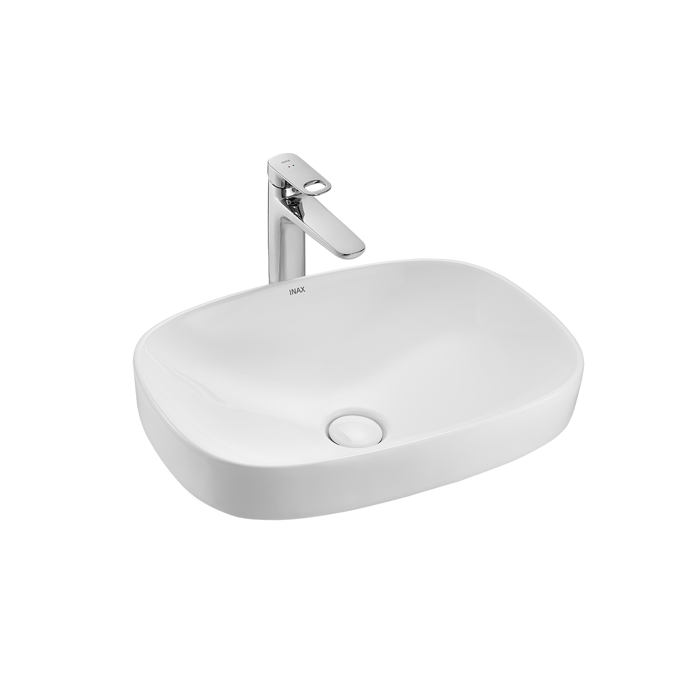
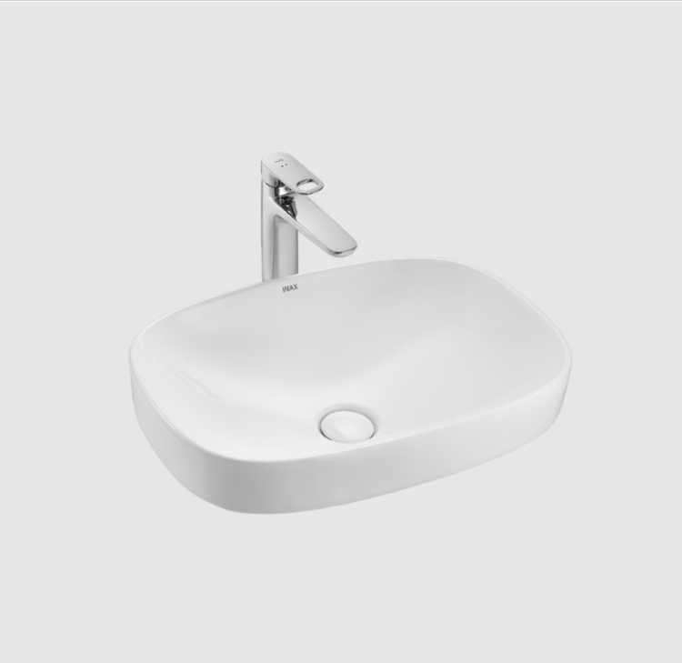
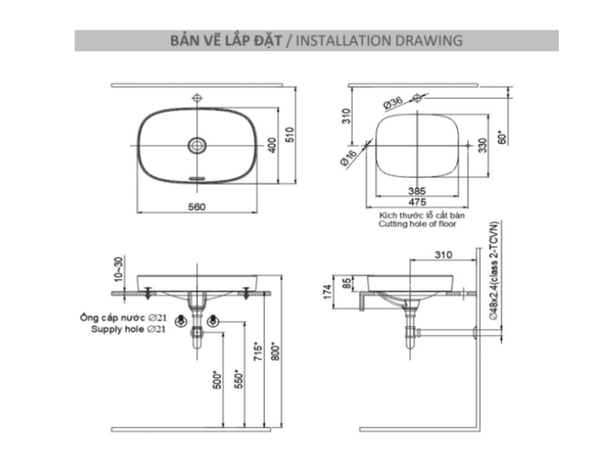

Chậu rửa đặt bàn AL-642V là sự kết hợp hoàn hảo giữa vẻ đẹp tinh tế và công nghệ hiện đại. Với thiết kế đặt bàn, sản phẩm tạo điểm nhấn sang trọng, đẳng cấp cho mọi không gian phòng tắm.Đặc điểm nổi bật của chậu rửa đặt bàn AL-642VĐược chế tác từ sứ cao cấp, chậu rửa lavabo đặt bàn AL-642 nổi bật với công nghệ AQUA CERAMIC độc quyền từ INAX. Lớp men sứ tiên tiến đảm bảo bề mặt luôn sáng bóng, trắng sạch qua hàng thập kỷ và hạn chế tối đa tình trạng bám bẩn, ố vàng. Người dùng có thể vệ sinh sản phẩm dễ dàng hơn bao giờ hết, giúp không gian phòng tắm luôn sạch sẽ, tinh tươm.Chậu rửa mặt đặt bàn AL-642V được thiết kế kiểu dáng vuông bầu độc đáo - một trong những thiết kế đặc trưng của INAX, mang lại cảm giác thư giãn và hài hòa tuyệt đối giữa con người và kiến trúc. Với kích thước 560 x 174 x 400 (mm) (Rộng x Cao x Sâu), sản phẩm tạo nên khu vực vệ sinh tiện nghi mà không chiếm quá nhiều diện tích.Chậu rửa đặt bàn AL-642V đã bao gồm bộ thoát nước với nút nhấn bằng sứ đồng bộ, vừa trang nhã vừa tiện lợi. Các thông số kỹ thuật chi tiết như ống cấp nước G ½” và ống thải chờ Ø48mm cũng được tích hợp đầy đủ. Ngoài ra, bộ ốc bắt bàn cũng được đính kèm sản phẩm, giúp việc lắp đặt diễn ra nhanh chóng.Để hoàn thiện không gian phòng tắm, bạn có thể tham khảo kết hợp AL-642V với các mẫu vòi chậu nóng lạnh cao cấp như sen vòi đơn LFV-5012SH, vòi chậu rửa mặt nóng lạnh LFV-6012SH hoặc sen vòi đơn LFV-8000SH2, tạo nên một tổng thể hài hòa và tiện nghi.Video giới thiệu về công nghệ AQUA CERAMIC độc quyền INAXHướng dẫn lắp đặt chậu rửa góc L-281VĐánh giá chậu rửa đặt bàn AL-642VĐược sản xuất bởi INAX - thương hiệu danh tiếng trong lĩnh vực sản xuất thiết bị vệ sinh, nổi bật với các dòng chậu rửa lavabo chất lượng cao.Thiết kế được định hình bởi phong cách hiện đại, cá tính và tinh tế trong từng đường nét, phù hợp với từng không gian và nhu cầu của mỗi khách hàng.Thông số kỹ thuậtChất liệuChất liệu sứ cao cấp với công nghệ AQUA CERAMIC cho bề mặt sứ 100 năm trắng sạch, sáng bóng, hạn chế bám bẩnLoạiĐặt bànKích thước560 x 174 x 400 (mm) (Rộng x Cao x Sâu)Thương hiệuINAXThiết kế- Kiểu dáng: Dạng đặt nổi trên bàn sang trọng - Thiết kế: INAX signature design với dáng vuông bầu là sự kết hợp tuyệt vời giữa con người và không gian kiến trúc, mang đến trải nghiệm thư giãn - Nút chặn nước bằng sứ đồng bộ, trang nhãĐặc điểm kỹ thuật- Ống cấp nước G 1/2" - Ống thải chờ Ø48mm - Bộ ốc bắt bàn - Bộ thoát nước nắp cheMàu sắcTrắngKhác- Gợi ý sản phẩm đi kèm: sen vòi đơn LFV-5012SH, vòi chậu rửa mặt nóng lạnh LFV-6012SH hoặc sen vòi đơn LFV-8000SH2 - Giá đã bao gồm nút nhấn xả bằng sứ 0014068W-C
Chậu rửa đặt bàn AL-642V
Chậu rửa thương hiệu INAX.
Đã cập nhật danh sách yêu thích.
DANH MỤC: Chậu rửa
MÃ SẢN PHẨM: AL-642V
DEPTH: 400mm
HEIGHT: 174mm
WIDTH: 560mm
Chậu rửa đặt bàn AL-642V là sự kết hợp hoàn hảo giữa vẻ đẹp tinh tế và công nghệ hiện đại. Với thiết kế đặt bàn, sản phẩm tạo điểm nhấn sang trọng, đẳng cấp cho mọi không gian phòng tắm.Đặc điểm nổi bật của chậu rửa đặt bàn AL-642VĐược chế tác từ sứ cao cấp, chậu rửa lavabo đặt bàn AL-642 nổi bật với công nghệ AQUA CERAMIC độc quyền từ INAX. Lớp men sứ tiên tiến đảm bảo bề mặt luôn sáng bóng, trắng sạch qua hàng thập kỷ và hạn chế tối đa tình trạng bám bẩn, ố vàng. Người dùng có thể vệ sinh sản phẩm dễ dàng hơn bao giờ hết, giúp không gian phòng tắm luôn sạch sẽ, tinh tươm.Chậu rửa mặt đặt bàn AL-642V được thiết kế kiểu dáng vuông bầu độc đáo - một trong những thiết kế đặc trưng của INAX, mang lại cảm giác thư giãn và hài hòa tuyệt đối giữa con người và kiến trúc. Với kích thước 560 x 174 x 400 (mm) (Rộng x Cao x Sâu), sản phẩm tạo nên khu vực vệ sinh tiện nghi mà không chiếm quá nhiều diện tích.Chậu rửa đặt bàn AL-642V đã bao gồm bộ thoát nước với nút nhấn bằng sứ đồng bộ, vừa trang nhã vừa tiện lợi. Các thông số kỹ thuật chi tiết như ống cấp nước G ½” và ống thải chờ Ø48mm cũng được tích hợp đầy đủ. Ngoài ra, bộ ốc bắt bàn cũng được đính kèm sản phẩm, giúp việc lắp đặt diễn ra nhanh chóng.Để hoàn thiện không gian phòng tắm, bạn có thể tham khảo kết hợp AL-642V với các mẫu vòi chậu nóng lạnh cao cấp như sen vòi đơn LFV-5012SH, vòi chậu rửa mặt nóng lạnh LFV-6012SH hoặc sen vòi đơn LFV-8000SH2, tạo nên một tổng thể hài hòa và tiện nghi.Video giới thiệu về công nghệ AQUA CERAMIC độc quyền INAXHướng dẫn lắp đặt chậu rửa góc L-281VĐánh giá chậu rửa đặt bàn AL-642VĐược sản xuất bởi INAX - thương hiệu danh tiếng trong lĩnh vực sản xuất thiết bị vệ sinh, nổi bật với các dòng chậu rửa lavabo chất lượng cao.Thiết kế được định hình bởi phong cách hiện đại, cá tính và tinh tế trong từng đường nét, phù hợp với từng không gian và nhu cầu của mỗi khách hàng.Thông số kỹ thuậtChất liệuChất liệu sứ cao cấp với công nghệ AQUA CERAMIC cho bề mặt sứ 100 năm trắng sạch, sáng bóng, hạn chế bám bẩnLoạiĐặt bànKích thước560 x 174 x 400 (mm) (Rộng x Cao x Sâu)Thương hiệuINAXThiết kế- Kiểu dáng: Dạng đặt nổi trên bàn sang trọng - Thiết kế: INAX signature design với dáng vuông bầu là sự kết hợp tuyệt vời giữa con người và không gian kiến trúc, mang đến trải nghiệm thư giãn - Nút chặn nước bằng sứ đồng bộ, trang nhãĐặc điểm kỹ thuật- Ống cấp nước G 1/2" - Ống thải chờ Ø48mm - Bộ ốc bắt bàn - Bộ thoát nước nắp cheMàu sắcTrắngKhác- Gợi ý sản phẩm đi kèm: sen vòi đơn LFV-5012SH, vòi chậu rửa mặt nóng lạnh LFV-6012SH hoặc sen vòi đơn LFV-8000SH2 - Giá đã bao gồm nút nhấn xả bằng sứ 0014068W-C
DANH MỤC: Chậu rửa
MÃ SẢN PHẨM: AL-642V
DEPTH: 400mm
HEIGHT: 174mm
WIDTH: 560mm